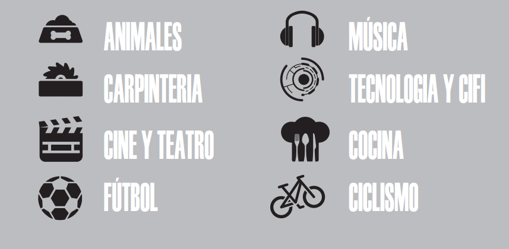

¿Quien Soy?
Andrés Camilo Guerra Mejía
Diseñador Industrial con 12 años de experiencia en el ámbito del diseño de producto, desarrollo y producción de mobiliario, Diseño y dibujo mecánico y 5 como docente y tallerista . Entusiasta de la docencia como vínculo indispensable entre la academia y el mundo laboral, utilizando la CREATIVIDAD + MÉTODO como herramienta de innovación transversal a todos los estadios del saber y el hacer. Amante de los ANIMALES, del cuidado de la vida y el amor como el motor principal de nuestra sociedad y como reflejo del poder del aprendizaje desde todas las relaciones naturales y artificiales presentadas en la sociedad
Intereses
Porque no solo las herramientas hacen al Profesional
Habilidades Duras
Las herramientas y las tecnologias están a nuestro favor

Datos de contacto
-
Celular: 310 827 39 22
Correo Electrónico: disenocartesiano@gmail.com
Behance
LinkedIn